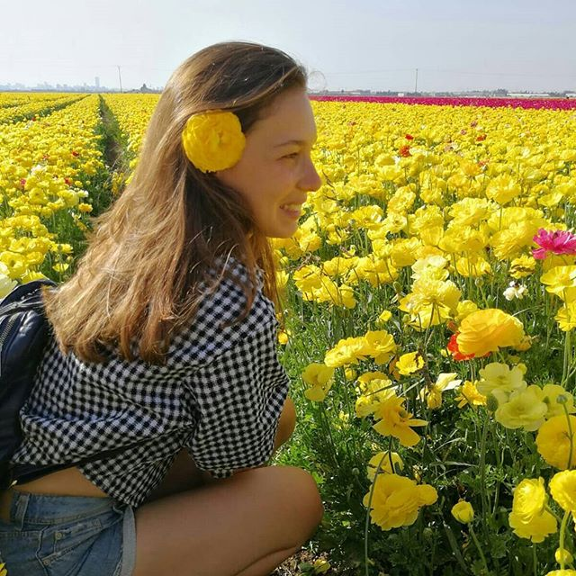
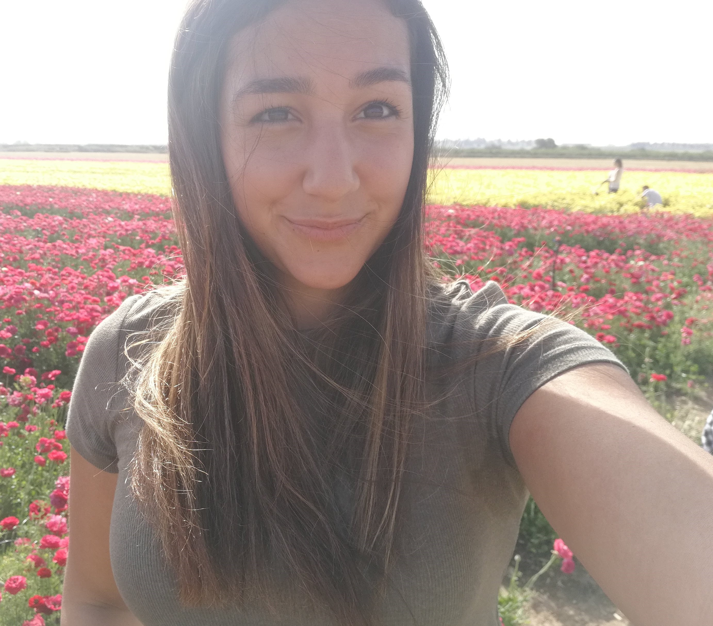

מי אנחנו?
-
שני שפיר
 -
אנטון יוטובסקי
- מורן חורי

אנו סטודנטים לתואר ראשון במחלקה לטכנולוגיות למידה, המכון הטכנולוגי חולון.
המדריך לכריך פותח עבור משתמשים שצורכים כריכים, האתר מספק גיוון וידע נוסף בנושא על מנת לשפר את החוויה של המשתמשים ולהפוך אותה למעניינת
האתר פותח במסגרת פרויקט משולב לקורסים בשנה א', תשע"ח:
- אפיון ממשק וחווית משתמש
- עיצוב ממשק משתמש
- פיתוח אתרי אינטרנט
- נגישות למחשב - אתגר לאנשים עם מוגבלות

האתר אופיין ועוצב לפי עקרונות של "עיצוב ממשק" ופותח ב- HTML5 ו-Css3 תוך התחשבות בעקרונות "נגישות אתרים".
האתר כולל תוצר אינטראקטיבי לייצוג ידע המאופיין ומפותח בקורסים" ארגון וייצוג ידע" ו- "מבוא לתכנות אינטראקטיבי".